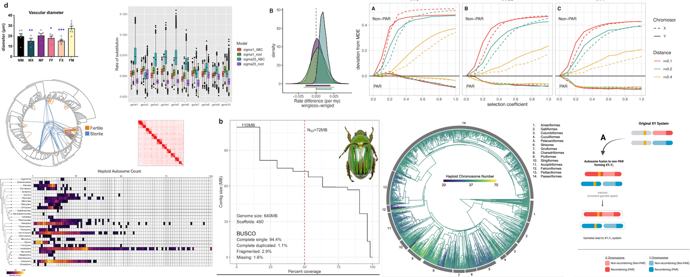

Experimental Design in Biology
BIOL 683 | Fall 2026

Course Information
Instructor
Course Goals and Philosophy
This course prepares PhD students to be rigorous, fast, and AI-savvy scientists. Students will learn R programming through a "vibe coding" approach-building intuition and working alongside AI tools-while progressing through a carefully sequenced series of datasets that grow in complexity. Each week builds skills in data visualization, hypothesis testing, model building, and critical evaluation of both statistical methods and AI-generated output.
By the end of the course, you will understand when and how to apply t-tests, chi-square tests, linear models, generalized linear models, mixed effects models, dimensional reduction techniques, and Bayesian MCMC approaches-not just as isolated methods, but as part of a cohesive analytical toolkit.
Learning Objectives
- Develop practical proficiency in R for data visualization, manipulation, and analysis.
- Learn "vibe coding": using AI as a coding partner while understanding the logic behind your analyses.
- Progress through increasing complexity in experimental design and statistical methods.
- Master hypothesis testing and model selection frameworks.
- Apply mixed effects models, dimensional reduction, and Bayesian methods to real biological data.
- Critically evaluate statistical output, model assumptions, and AI-generated suggestions.
- Communicate results clearly through code, visualizations, and scientific writing.
- Practice responsible and ethical use of AI in research.
Course Resources & Tools
Guides & References
Datasets
Interactive Tools
Course Schedule – Fall 2026
A dataset-focused progression from foundational R and vibe coding through advanced statistical methods.
| Week | Dates | Topic | Dataset Focus | Resources |
|---|---|---|---|---|
| 1 | Aug 24–30 | Orientation & The AI Scientist | Course philosophy, vibe coding intro, AI tools setup | TBD |
| 2 | Aug 31–Sep 6 | Foundations of R & Vibe Coding | Base R syntax, reading data, using AI as coding partner | TBD |
| 3 | Sep 7–13 | Data Visualization with Base R | Morphometric Measurements: Plotting, histograms, boxplots | TBD |
| 4 | Sep 14–20 | Statistical Thinking & Distributions | Ecological Count Data: Probability, distributions, hypothesis framework | TBD |
| 5 | Sep 21–27 | T-tests & Permutation Tests | Field Experiment Data: Comparing two treatment groups | TBD |
| 6 | Sep 28–Oct 4 | Test Week 1: AI-Critical Thinking Exam | Synthesizing weeks 1–5; evaluating AI-generated analyses | TBD |
| 7 | Oct 5–11 | Chi-Square & Tests of Proportions | Categorical Data: Genetic cross ratios or species surveys | TBD |
| 8 | Oct 12–18 | Linear Models Part 1: ANOVA & Regression | Multi-factor Experimental Data: Comparing multiple groups and continuous predictors | TBD |
| 9 | Oct 19–25 | Generalized Linear Models & Model Selection | Count/Binary Response Data: GLMs, AIC-based model selection | TBD |
| 10 | Oct 26–Nov 1 | Mixed Effects Models | Longitudinal or Multi-site Data: Random effects, nested designs | TBD |
| 11 | Nov 2–8 | Dimensional Reduction | Multivariate Data: PCA, ordination techniques | TBD |
| 12 | Nov 9–15 | Bayesian Methods & MCMC | Phylogenetic/Evolutionary Parameters: Priors, posteriors, convergence diagnostics | TBD |
| 13 | Nov 16–22 | Choosing Your Approach: Final Data Discussion | Integrating methods; planning final project analyses | TBD |
| 14 | Nov 23–29 | Advanced Plotting & Work on Final | Publication-quality visualizations; refining final analyses | No class Thursday (Thanksgiving) |
| 15 | Nov 30–Dec 6 | Work on Final Project | Completion and presentation prep | TBD |
How This Course Works
Vibe Coding Philosophy
"Vibe coding" is about building intuition and confidence in your data analysis skills. Rather than memorizing syntax, you'll learn to understand the logic of statistical approaches and use AI tools (like ChatGPT or Copilot) as your coding partner-asking them for help with implementation while you focus on the conceptual work. You'll learn to critique AI suggestions, catch errors, and understand why certain approaches work better than others.
Dataset Progression
Each week focuses on a specific biological dataset that demonstrates the week's statistical concept. The datasets increase in complexity: starting with simple morphometric measurements for visualization, progressing through experimental comparisons, categorical data, multi-factor designs, and finally to advanced methods like mixed models and Bayesian approaches. By working with real (or realistic) biological data, you'll see how methods apply in practice.
Assessment Structure
Test Week 1 (Week 6): An AI-Critical Thinking Exam where you'll analyze a dataset and an AI-generated analysis, identifying strengths, weaknesses, and what you would do differently.
Final Project: A comprehensive data analysis project where you choose a dataset of interest, apply appropriate statistical methods learned in the course, and present your findings clearly with publication-quality visualizations.